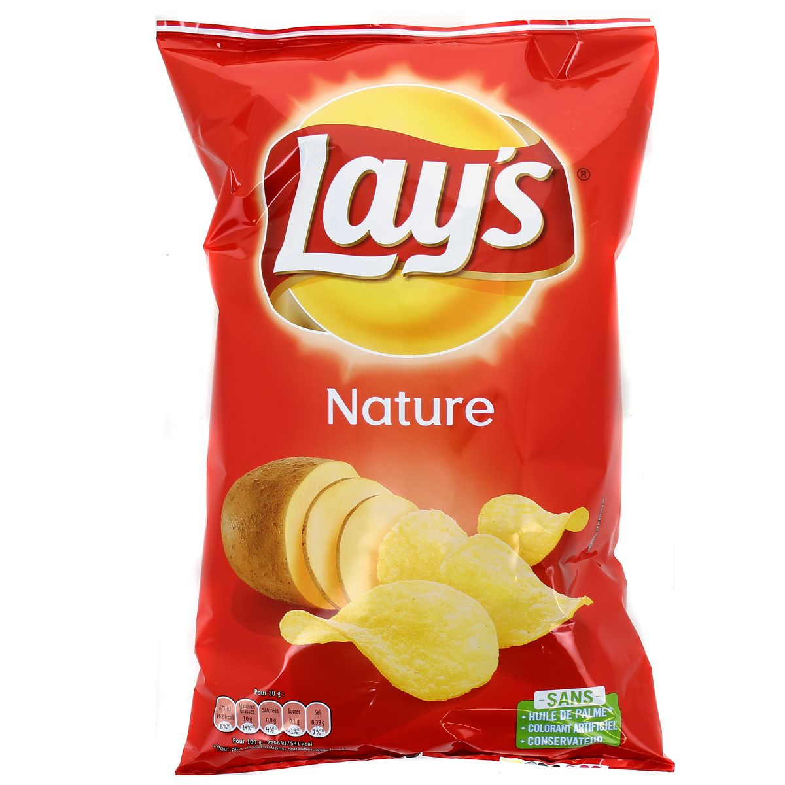
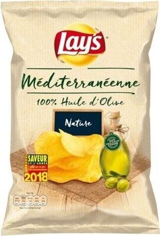
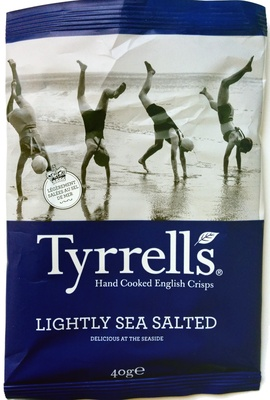

| Marque | Dénomination | Description | Description gustative | NutriScore | Image |
|---|---|---|---|---|---|
| Lays | Nature | Fines tranches de pommes de terre cuites dans une huile random et salées |
|  | |
| Nature huile d'olive | Fines tranches de pommes de terre cuites dans l'huile d'olive et salées |
|  | ||
| Tyrells | Lightly sea salted | Tranches de pommes de terre cuites l'huile et finement salées |
|  |
« Pour votre santé, évitez de manger trop gras, trop sucré, trop salé »